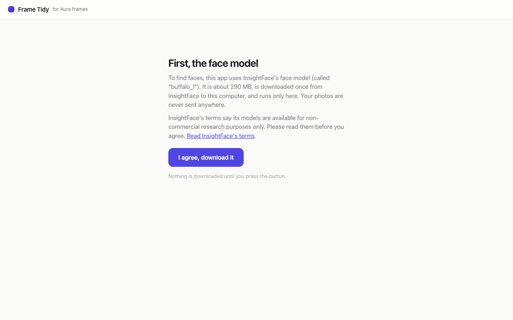
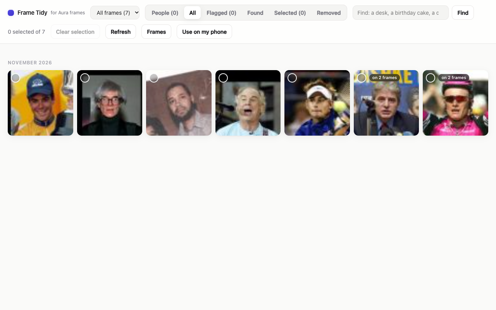
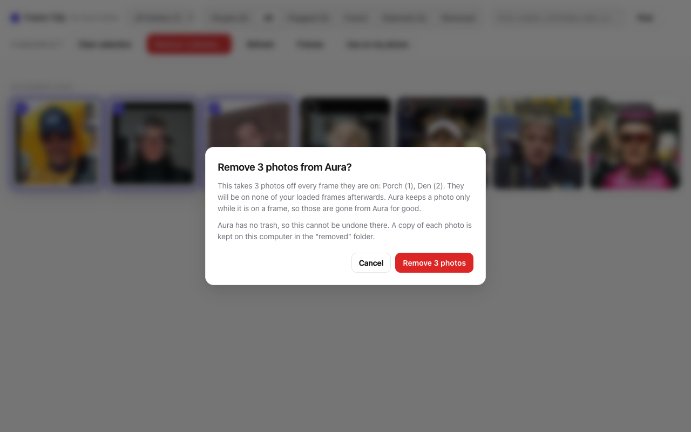

What it does
It copies the photos on your Aura frames to your computer, reads the faces there, and groups them into people. You open a person, untick any photo that is not them, and remove the rest from your frames.
This is not an Aura product, and Aura has no part in it.
Who it is for
People with a lot of photos on one or more Aura frames who want someone gone from them, without hunting for each photo by hand. For now you need to be comfortable installing from a terminal.


Removing and putting back

- Removal is permanent on Aura. Aura has no trash.
- Before a photo is removed, the app saves and checks a full-size copy on your computer. If that fails, it does not remove the photo.
- You can put a photo back only while Aura still has it, which means it is on another frame. Otherwise you re-add the saved copy with the Aura app.
What stays on your computer
Your photos, your people, and your sign-in. Nothing is uploaded, and there is no server run by this project. Your password goes only to Aura. The app downloads its face model once from InsightFace, and a search model once from Hugging Face, each only after you agree. It checks GitHub for a newer version at most once a day.
Using it from a phone
Optional, off by default. Scan a QR code on the computer and use the page from a phone on the same wifi. The connection is not encrypted, so use it only on a home network. You cannot sign in from the phone.
The honest limits
It is unofficial. It uses Aura's undocumented interface. Aura's terms of service (updated May 2021) do not allow automated tools like this one. Use it by your own choice. Aura can change or block that interface at any time, and the app may stop working.
The face model has its own licence. InsightFace says its pretrained models are available for non-commercial research purposes only. The model is not part of this project or its download.
- It needs a computer. There is no phone-only way to use it.
- Face matching makes mistakes, especially between relatives who look alike. Check the photos before you remove them.
- The macOS app is signed and notarized by Apple. The Windows build has not been tested.